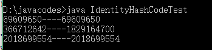

System类提供了一个identityHashCode(Object x)方法，这个方法返回的是指定对象的精确hashCode值，也就是根据该对象的地址计算得到的hashCode值。
当某个类的hashCode()方法被重写之后，该类实例的hashCode方法就不能唯一地标识该对象，但是如果两个对象的identityHashCode值相同，则这两个对象是一个对象。
通过以下代码加深理解：
1 public class IdentityHashCodeTest{
2 public static void main(String[] args){
3 String s1=new String("Hello");
4 String s2=new String("Hello");
5 System.out.println(s1.hashCode()+"----"+s2.hashCode());
6 System.out.println(System.identityHashCode(s1)+"----"+System.identityHashCode(s2));
7
8 String s3="Java";
9 String s4="Java";
10 System.out.println(System.identityHashCode(s3)+"----"+System.identityHashCode(s4));
11 }
12 }输出结果如下：

结论；
1.s1和s2虽然是不同的两个对象，它们的identityHashCode值不同，但是由于String重写了hashCode方法，改为根据字符序列计算，所以第一个输出是一样而第二个是不一样的。
2.s3和s4是相同的对象，在常量池里，所以第三个输出是一样的。